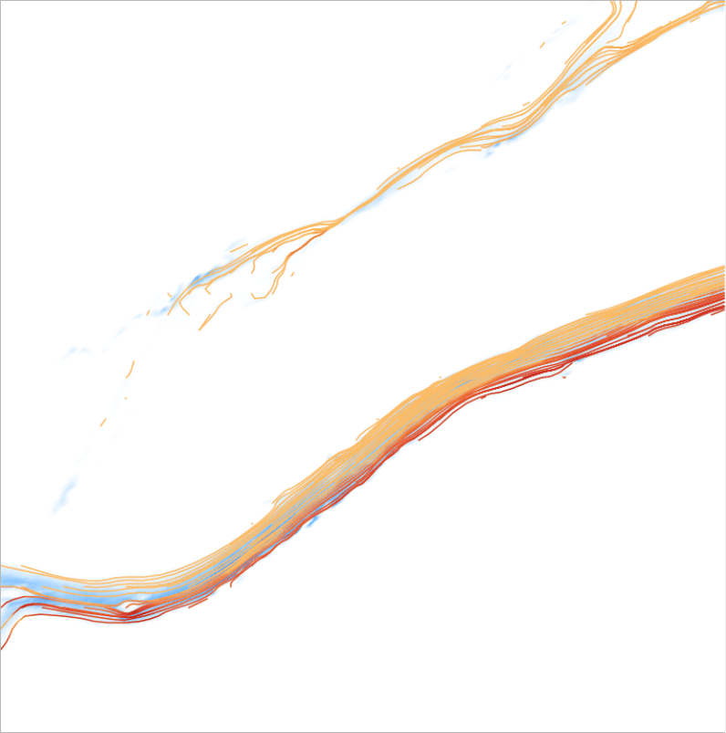
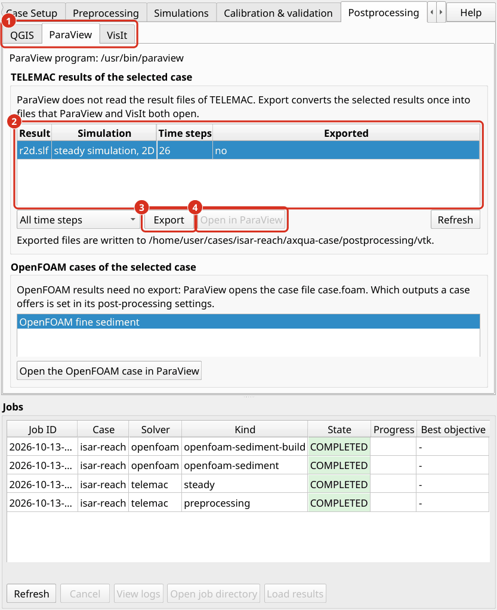

Postprocessing
Postprocessing turns simulation results into maps, figures and tables. Depth-averaged results are best presented as maps in QGIS. Three-dimensional results require ParaView or VisIt (Postprocessors).
QGIS map generation
Load results. In the job list below the tabs, select a completed job and click Load results. The result layers are added to the QGIS project in a group that is named after the job. aXqua does not copy any files. The layers refer to the result files at their location in axqua-case/. The map shows the last time step of the result, which for a steady simulation is the steady state. The Temporal Controller panel of QGIS selects another time step, for example of a simulation with a varying discharge.

The tab Postprocessing, sub-tab QGIS. (1) Loading the results of the selected job. (2) The predefined map styles. (3) The print layout, the movie export and the display settings.
TELEMAC results are loaded as a mesh layer with two predefined styles:
Water depth is drawn from white over light blue to dark blue. Water that is shallower than the minimum water depth is transparent, so that the map shows the area in which water actually flows (Plugin profile).
Flow velocity is drawn as a color fill of the velocity magnitude, from yellow (slow) to purple (fast), with dark arrows in the flow direction. The color scale ends at the upper limit of the profile, and aXqua reports when a result exceeds it. The arrows stand on a regular grid of the map, so that their number does not depend on the mesh, and no arrow is drawn where the water stands.
Predefined map styles. The tab Postprocessing, sub-tab QGIS, offers four map styles that combine the flow direction with a second quantity in one layer. Select a result layer in the layer panel of QGIS, select a style and click Apply to the selected layer:
Map style |
Content |
|---|---|
Water depth with streamlines |
The water depth in blue. On top of it, streamlines that follow the flow direction and are colored by the velocity magnitude, from light orange (slow) to dark red (fast). |
Water depth with velocity arrows |
The water depth in blue with arrows in the flow direction, colored by the velocity magnitude in the same way. |
Velocity magnitude with streamlines |
The velocity magnitude from yellow to purple with dark streamlines. |
Velocity magnitude with arrows |
The velocity magnitude from yellow to purple with dark arrows. This is the style in which the velocity layer is loaded. |
Maps of a case. Which layers Load results adds, and whether one of these map styles is applied at once, is set for each case in its settings (Open case settings… on the Case Setup tab, page Post-processing): postproc.telemac_maps selects the maps of a TELEMAC result (depth, velocity, free-surface; water depth and velocity by default), and postproc.map_style names a map style that is applied to the water depth layer of every loaded TELEMAC result (depth-streamlines, depth-arrows, velocity-streamlines, velocity-arrows; none by default).
A streamline is a line that is tangent to the velocity at each of its points. Streamlines therefore show flow paths, recirculation zones and the division of the discharge among several channels more clearly than arrows. Neither arrows nor streamlines are drawn where the velocity is below 0.05 m/s. All other properties of the layers are changed in the QGIS layer properties as usual (Layer Properties > Symbology).


A steady result in the map style Water depth with streamlines: the water depth in blue and the streamlines colored by the velocity magnitude.
Print layout. aXqua > Add the default A3 print layout creates a map layout for the current map extent. It contains the map, a north arrow, an arrow in the flow direction, a scale bar and a legend. Complete the legend and export the layout as PDF or image from the QGIS layout manager.
Movies. For a simulation with a varying discharge, aXqua > Export movie renders one image per output time step of a result variable and combines the images into a video file. The movie uses the current map extent and layer styles. The encoding requires the program ffmpeg. If it is not installed, the images are kept, and aXqua shows the command with which they can be encoded later.
Export. The result layers are ordinary QGIS layers. They are exported to other formats with the export functions of QGIS, for example to a raster of water depths.
Tables. The evaluations of a run, such as the discharges at the boundaries and the wetted area, are stored as CSV files next to the results (TELEMAC dry runs 2D/3D). With geodata.control_sections, aXqua additionally computes the discharge through each cross section of that layer from the result. The cross sections can be moved in QGIS and evaluated again without repeating the simulation.
ParaView
ParaView is suited for the interactive inspection of results in three dimensions. It opens an OpenFOAM model directly and a TELEMAC result after an export.
Export of TELEMAC results. ParaView and VisIt do not read the result format of TELEMAC (SELAFIN). aXqua therefore converts a result once into the VTK format, which both programs read. On the tab Postprocessing > ParaView, the table lists the TELEMAC results of the selected case with their number of time steps. Select one or several results, choose between all time steps and the last time step only, and click Export. Without a selection, all results are exported. The conversion of one time step takes about one second for a mesh of 230,000 nodes. The same export serves ParaView and VisIt, and is repeated after a simulation was run again: the column Exported states whether the exported files are older than the result.
The exported files are written to the folder axqua-case/postprocessing/vtk/. Each result has a file <result>.pvd for ParaView, a file <result>.visit for VisIt, and a folder with one file per time step. In a terminal, the export is:
axqua export <case-file> # all results of the case
axqua export <case-file> --result r2d.slf --frames last
axqua export <case-file> --list # what the case has, and what is exported


The tab Postprocessing, sub-tab ParaView. (1) The sub-tabs of the three programs. (2) The TELEMAC results of the active case. (3) Export converts the selected results. (4) Open in ParaView starts the program with the exported result. The sub-tab VisIt has the same structure.
What the exported files contain:
A 2D result is a surface of triangles in the horizontal plane, at elevation zero. The fields carry their TELEMAC names, for example
WATER DEPTH,FREE SURFACE,BOTTOMandSCALAR VELOCITY. The velocity is additionally available as the vectorVELOCITY, which arrows and streamlines require.A 3D result is a volume of prisms between the bed and the water surface, with the node elevations of each time step. The vector
VELOCITYhas three components.The time of each time step is the simulated time in seconds.
The node coordinates are taken from the geometry file of the model and not from the result file. TELEMAC stores a result in single precision, including its coordinates, and a coordinate of several million meters has a resolution of 0.5 m in that precision. The computation is not affected, because TELEMAC computes with the exact geometry. The mesh that is stored in a result file, however, is distorted: in a model with channel cells of 0.5 m, 14 % of the cells of the stored mesh had no area left. aXqua places the fields on the exact nodes.
Open a TELEMAC result. Click Open in ParaView, or start ParaView and open the file <result>.pvd. Click Apply. The following steps are typical:
Select the field to display in the toolbar, for example
WATER DEPTH. The time step is selected with the animation controls.To display the water only, apply the filter Threshold to
WATER DEPTHwith a lower limit of 0.01 m. This is the minimum water depth that aXqua uses in its own evaluations (TELEMAC dry runs 2D/3D).To display the relief of a 2D result, apply the filter Warp By Scalar with
BOTTOMfor the terrain or withFREE SURFACEfor the water surface. The mesh is flat by default for a reason: an area or a volume that the filter Integrate Variables computes over the flat mesh is the area or the volume of the model, whereas the same integral over a mesh on the sloping bed is larger.For streamlines, apply the filter Stream Tracer with the vector
VELOCITYand a line across the channel as seed.
Open an OpenFOAM model. An OpenFOAM model of aXqua needs no export. The box OpenFOAM cases of the selected case on the sub-tabs ParaView and VisIt lists the OpenFOAM models of the active case (the free-surface model and the fine sediment model), and Open the OpenFOAM case in ParaView (or in VisIt) starts the program with it. What an OpenFOAM model offers is set in the case settings, page Post-processing, with postproc.openfoam_outputs: paraview (the file case.foam), visit (the file system/controlDict, through which VisIt opens an OpenFOAM case), and vtk, a conversion with foamToVTK after every run, which can double the size of a case. ParaView and VisIt are offered by default. In ParaView, the model can also be opened with File > Open and the file case.foam in the folder axqua-case/openfoam/. The mesh regions and the result fields can then be selected in the properties panel. To display the water only, apply the filter Threshold or Clip to the field alpha.water, which is 1 in water and 0 in air.
VisIt
VisIt serves two purposes: the interactive inspection of results, as with ParaView, and the predefined figures that aXqua renders without interaction.
Open a TELEMAC result. Export the result as described for ParaView (export of TELEMAC results). The tab Postprocessing > VisIt has the same table and the same Export button, and one export serves both programs. Click Open in VisIt, or start VisIt and open the file <result>.visit. Add a plot with Add > Pseudocolor and select a field, for example WATER DEPTH, then click Draw. The time slider moves through the time steps. The operator Elevate displays the relief of a 2D result, and the operator Threshold restricts the plot to the water.
Open an OpenFOAM model. VisIt opens an OpenFOAM model through the file system/controlDict in the folder axqua-case/openfoam/. Unlike ParaView, it does not accept the file case.foam.
Predefined figures. aXqua renders predefined figures of three-dimensional OpenFOAM results with VisIt. No interaction with VisIt is required: aXqua writes a script for each figure and lets VisIt execute it without opening a window.
Figure |
Content |
|---|---|
|
The water surface, colored by the flow velocity. For a model in the mode |
|
The flow velocity in a horizontal section at the relative depth at which point velocity measurements in rivers are usually taken (0.6 of the water depth). |
|
Vertical velocity profiles at the measurement points, together with the measured values and their error bars. |
In a terminal, the commands are:
axqua postproc <case-file> --list # available figures, and the reason if one is not available
axqua postproc <case-file> # render all figures
axqua postproc <case-file> --script-only # write the VisIt scripts without rendering
The figures are written to axqua-case/postprocessing/figures/. The scripts are kept in axqua-case/postprocessing/visit/, so that every figure can be reproduced and adapted. The list of figures (postproc.scenes) and the image size are set in the postproc block of the case file, which is the page Post-processing of the case settings.
Note
Starting the predefined figures from the plugin is not yet available in this version. Use the commands above.